Mechanical Design & Drafting
Selected CAD models, assemblies, fabrication drawings, fixtures, and mechanical components developed through professional, academic, and personal work.
SOLIDWORKS · Autodesk Inventor · Technical Drawing · Sheet Metal · Mechanical Assemblies
Louver Assembly & Components
Sheet-metal louver assembly and fabrication documentation developed during mechanical design work.


Individual Component Drawings


Modular Roller Conveyor
Straight and curved modular conveyor system with structural supports, roller assemblies, connectors, and detailed component drawings.
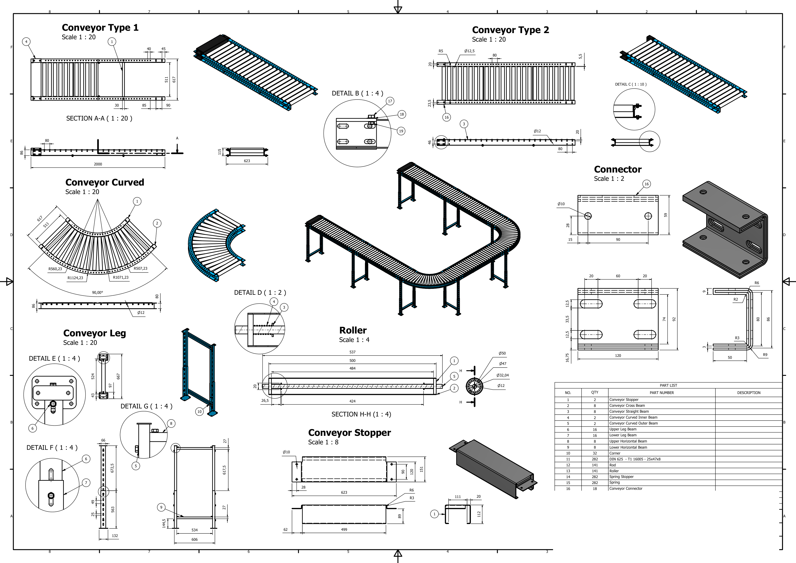
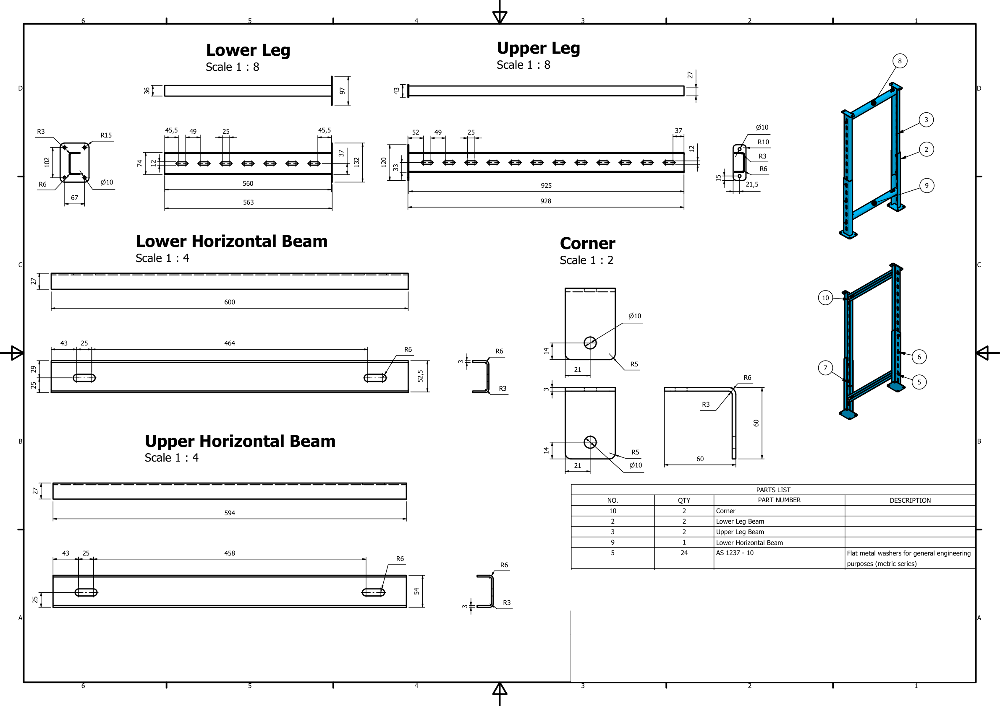
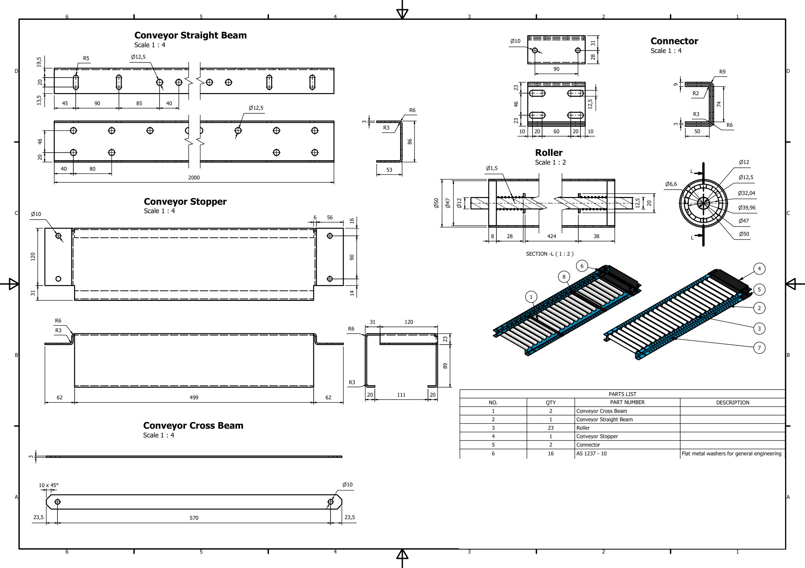
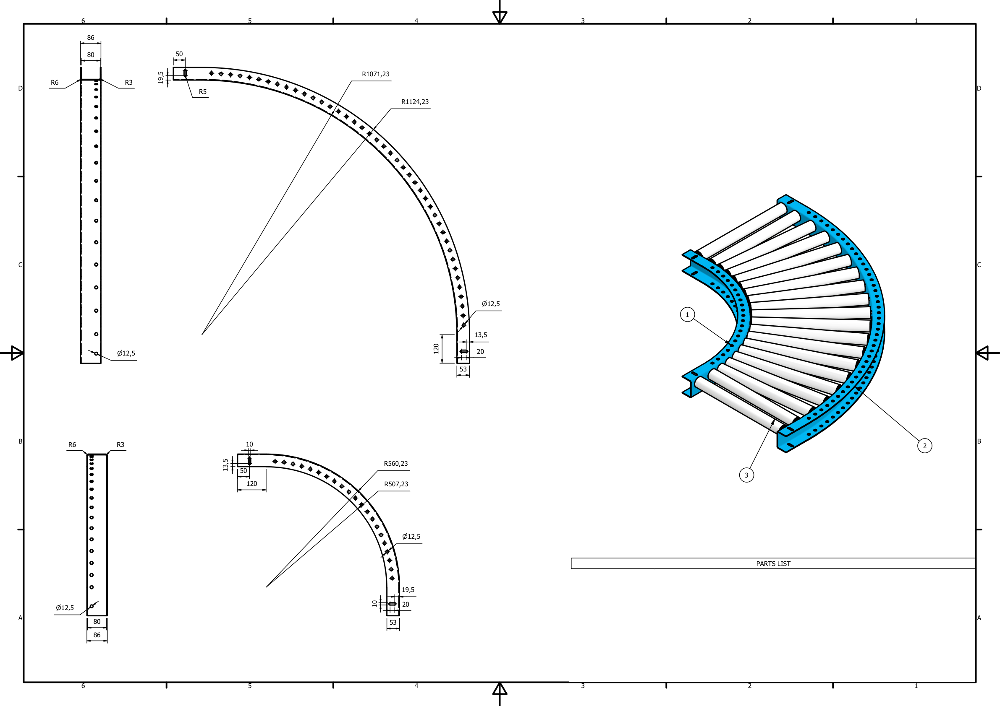
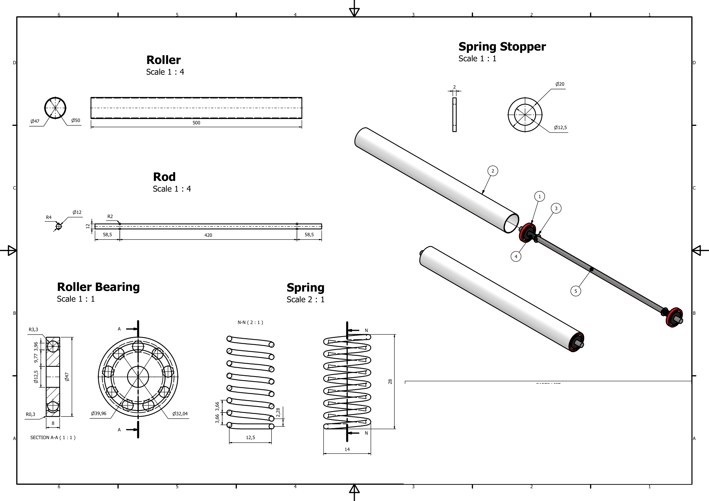
Mechanical Components & Fixtures
Selected detailed designs covering fixtures, supports, mechanisms, machined components, and sheet-metal parts.
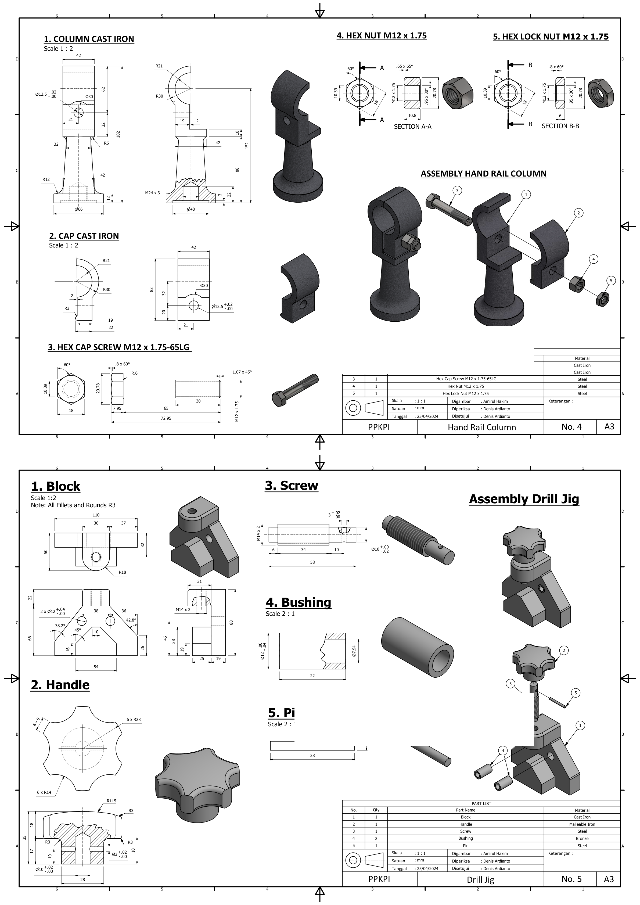
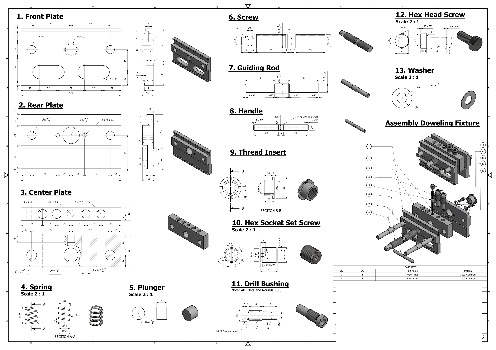
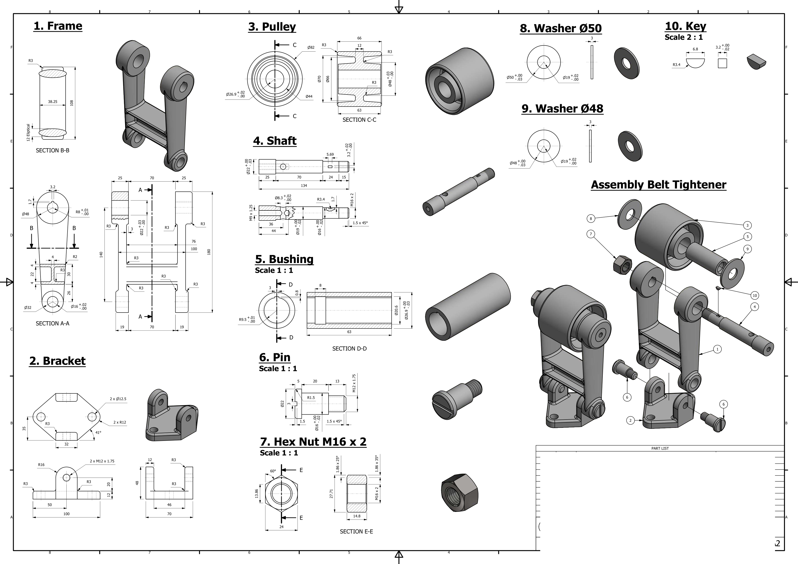
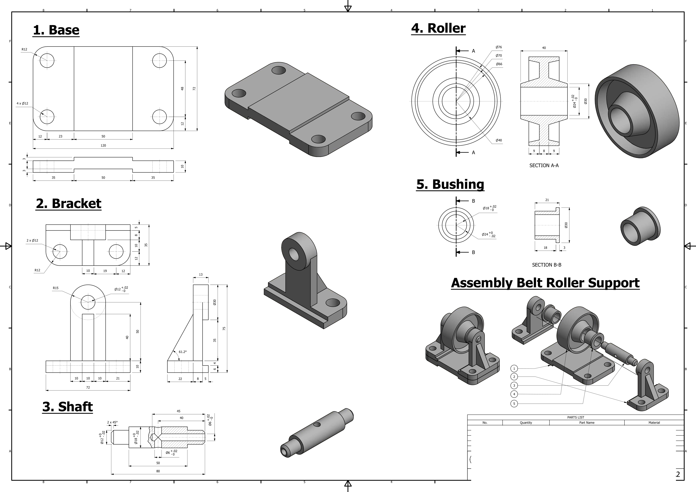
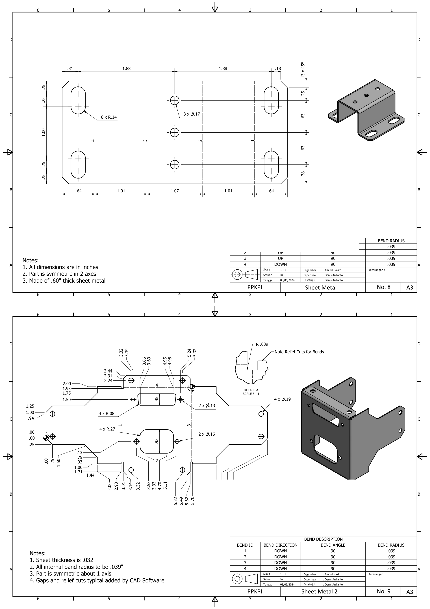
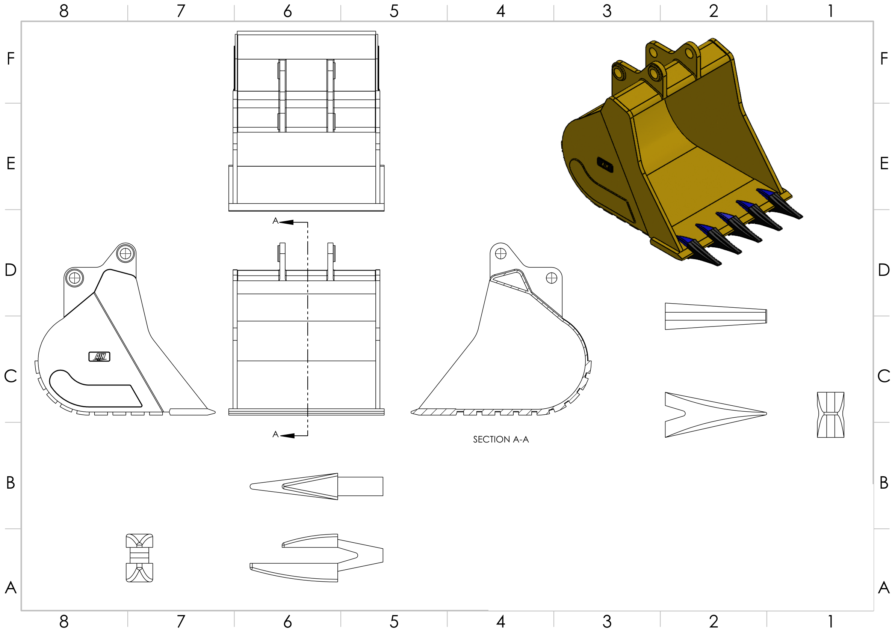

CP-Titanium I-Plate
Four-hole implant geometry developed for the micro-milling research project.
- CP Titanium
- 22.5 mm overall length
- 0.6 mm thickness
- Ø1.6 mm holes